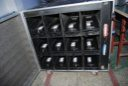
How-To
Preparing Moving Heads and Truss for Shipping: A Step-by-Step Guide
The New 295W 10R beam moving head light has a life of 2200 hours
Read More →Product updates, technical guides and industry perspectives from RiGeBa Lighting.

The New 295W 10R beam moving head light has a life of 2200 hours
Read More →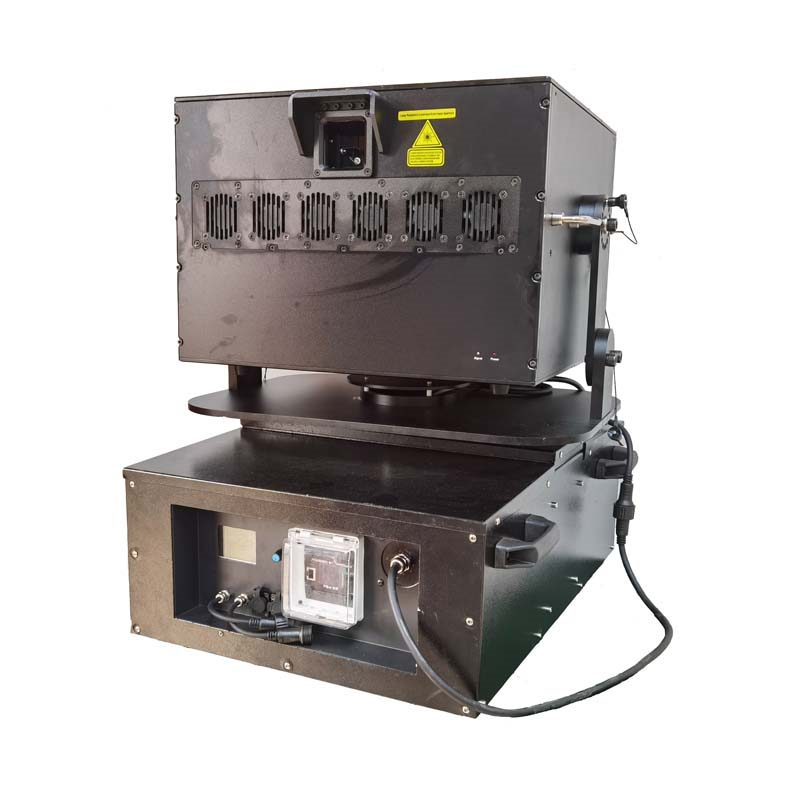
Private-label housing colour and logo options on OEM moving head runs are a great way for professional buyers to customize their lighting fixtures.
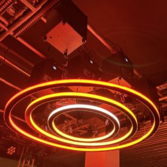
What to document and photograph before filing a warranty claim on LED fixtures, and where coverage is defined in the order confirmation.
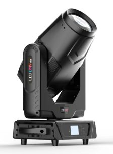
50 moving heads require specific spare parts like fans and drivers
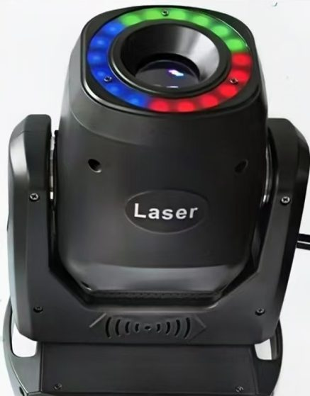
New 295W 10R beam moving head light has a life of 2200 hours
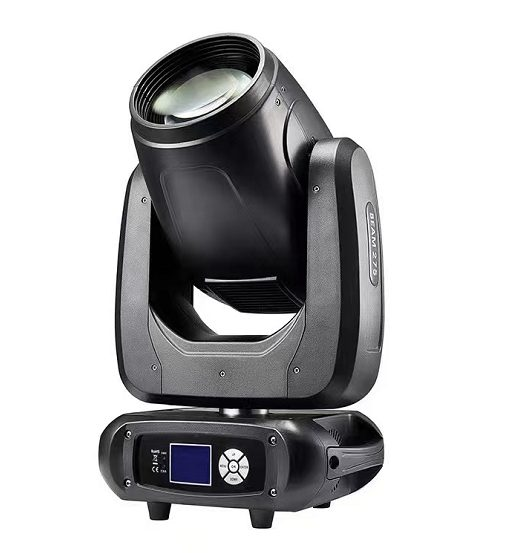
Buying a first 30-fixture lighting package for a new rental company can be a daunting task, especially with the numerous options available in the market.
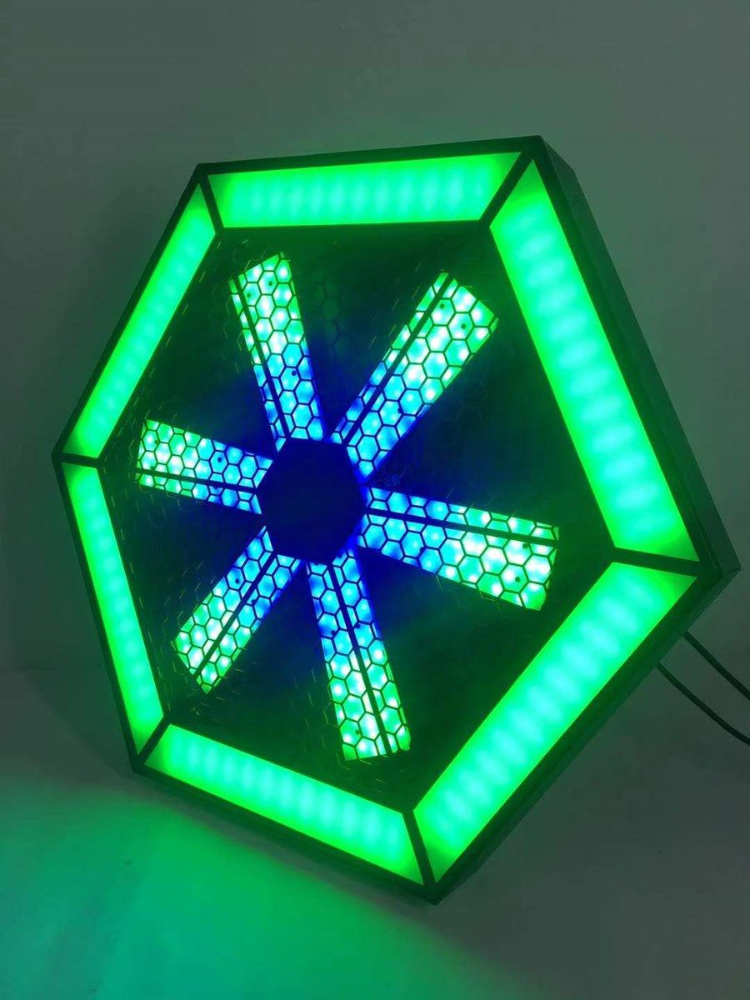
RG-EL0001FL-3e504 Infinite whirlwind LED fan light has 504 SMD three in one RGB high brightness LEDs
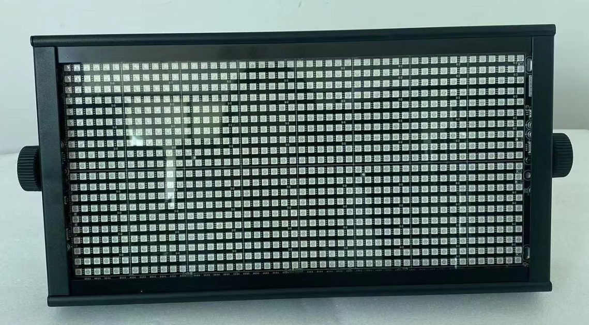
Stage lighting for product launches requires careful consideration of the brand's color scheme and the overall aesthetic of the event.
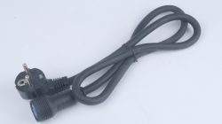
For rental houses, touring productions, theatres, clubs, churches, and event companies, making the switch to LED can be a smart investment.
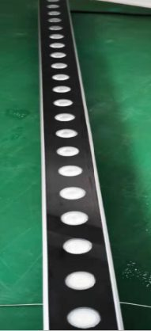
Christmas market outdoor trails require specialized lighting to create a festive and inviting atmosphere.
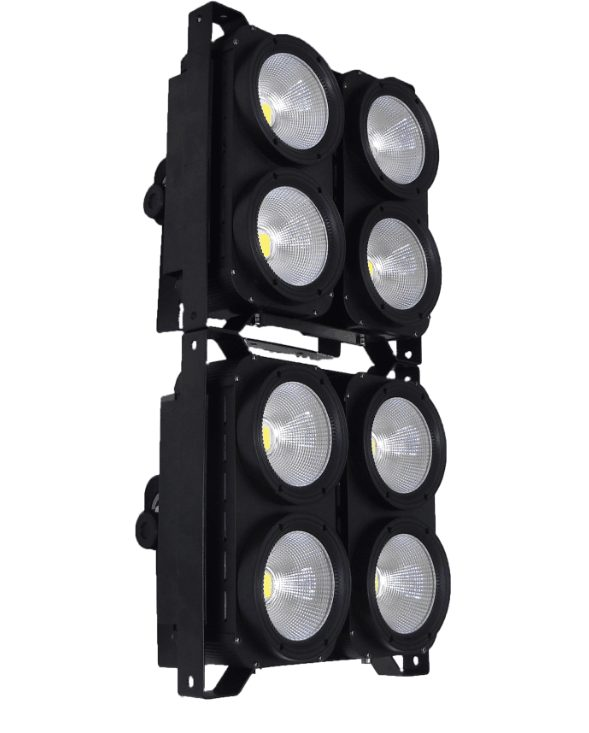
The RG-TH8B600S has a total power of 600W and can be used as an audience blinder, with a camera-safe strobe rate of 0-25 times per second.
The RG-TH8B600S, with its 8 high power LEDs, is a suitable option for lecture theatres, providing 600W of power and a color temperature of 6500K.
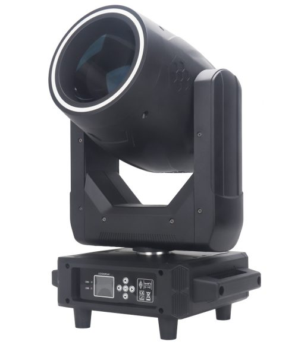
RG-M300BH-KYH16M 300W 16CH Beam moving head light strip auxiliary lighting
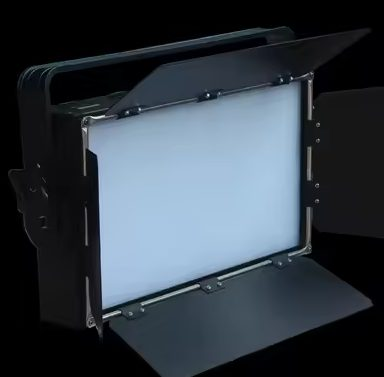
The 300W LED Panel light -warm has a color temperature of 3200K/5600K/2-in-1 optional
RG-W12IUV10-Ke6A has 24 LEDs and a 10W UV LED city color light
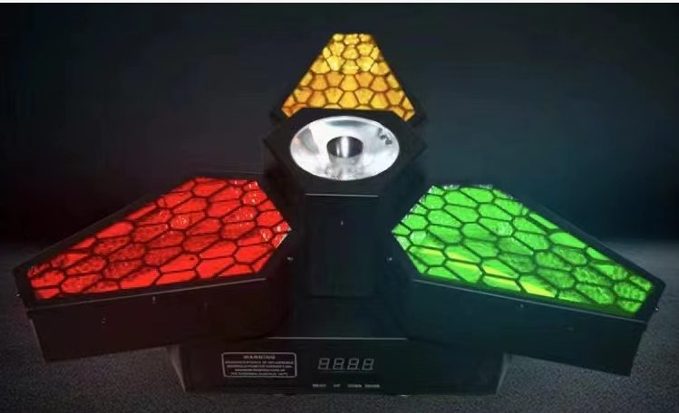
The RG-EL0001FL-3e260 LED background stage fan light has 3 pieces 60w golden cob
The 300W LED Panel light -warm white and cold white 2in1 is suitable for hotel ballrooms
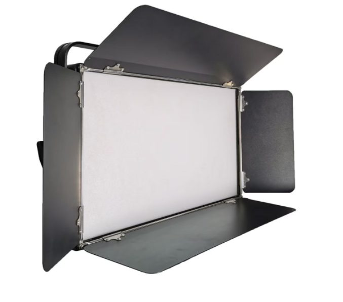
Look for fixtures with low decibel ratings, such as the RG-PS200A110-W, and consider fanless options if possible.
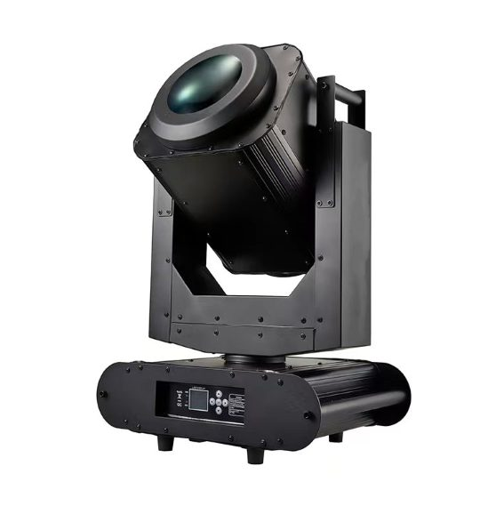
For technicians and lighting professionals, it's not uncommon to encounter situations where a 230W beam appears brighter than a 400W wash.
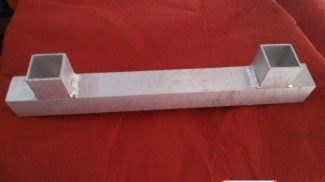
For example, the RG-ML100BD-KC6AH40 6头10瓦光束LED摇头+RGB激光灯 is a moving head laser that can produce a wide range of beam shows.
Some moving heads, like the RG-ML400RS-KNNW1H21, have a high IP rating and can withstand outdoor use.
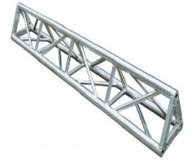
Ladder truss, such as the HJ-L1TMY303010T50-W, offers a lightweight and versatile option for event and production installations.
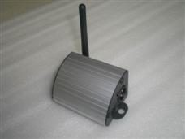
The RG-CTCWILDR-RS wireless remote control, for example, has a transmission power of 20dBm and a receiver sensitivity of 94dBm.
The RG-PS200A110-W, for example, is a 200W LED tricolor soft light with a relatively low fan noise level, making it suitable for quiet environments.
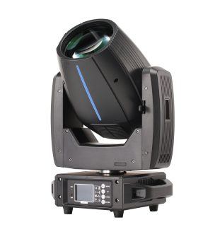
Clean your moving heads every 2200 hours, and replace the belt when it shows signs of wear.
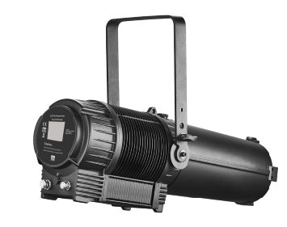
The RG-PS180A19-RGBW and RG-PS180A19F-RGBW offer different beam angles and configurations, making them suitable for different applications.
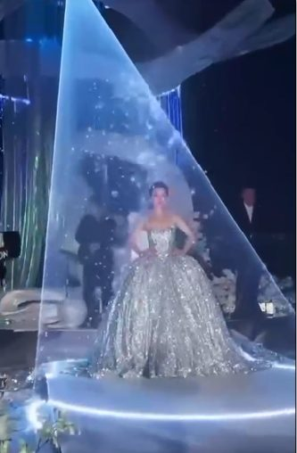
A 10W output, such as the RG-LL10000f1LM, is a good starting point. This output can provide a sufficient amount of light to cover a moderate-sized venue.
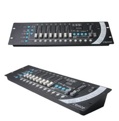
For small venues, DMX control is generally the better option, offering more precise control and flexibility.
Use a lighting controller, such as the RG-CTD40S4F-K or RG-CTD40S6F-K, to control the lighting levels and colors.
The RG-ST112A-S20f336A RGB LED 1008 Colouring Strobe Light has a high brightness LED5050SMD light source, which can help reduce flicker.
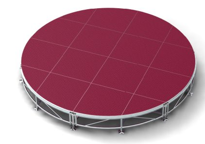
Check the load capacity and size of the stage platform before load-in, and ensure it meets your specific needs.
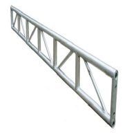
Ladder truss, such as HJ-L1TMY303010T50-W, has a ladder-like shape, while triangle truss, such as HJ-L1SMY303010T50-W, has a triangular shape.
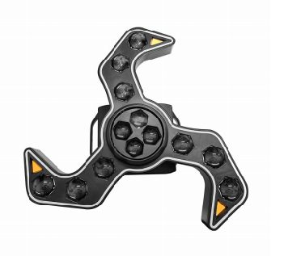
Check the power consumption of each fixture, like the Full Moon Scimitar LED effect light
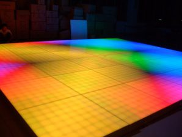
The BX-L1F65x50T28-W Safety Bar is an example of a safety bond that can be used in rigging systems.
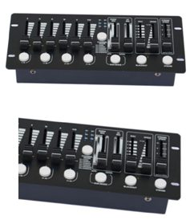
The minimum channel count you should consider for a rental house depends on the size and complexity of your typical events.
For example, the RG-CTCWILDR-RS wireless remote control has a latency of less than 1 ms.
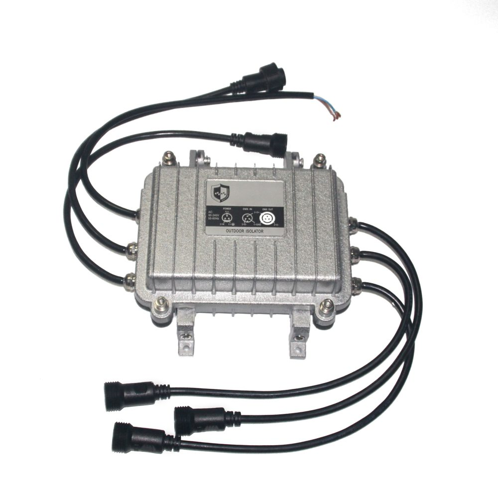
DMX splitters are available in different configurations, including 1-in, 4-out and 1-in, 8-out.
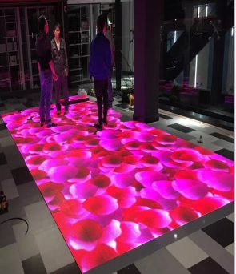
For example, the RG-VDF44S2976-KV0 has a panel pitch of 2.976mm, while the RG-VDF44S391-KV0 has a panel pitch of 3.91mm.
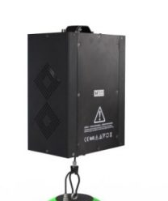
The 5KG DMX Control winch/lifting machine, for example, has a load limit of 5KG and a control mode of 6/10 CH.
For example, the New 295W 10R beam moving head may be more suitable for smaller venues, while the RG-ML420WC-KCH93 may be more suitable for larger venues.
To purchase LED fixtures from RiGeBa Lighting, visit our website and navigate to the RG-P58TC10-Ke18A or RG-EL0001FL-3e844 product pages.
Clean your moving heads every 2200 hours, and replace the belt when it shows signs of wear.
The New 295W 10R beam moving head and the RG-M230BN-KMH16 are popular options for their versatility and affordability.
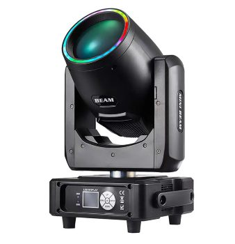
The RG-M230BN-KMH16, for example, has a beam angle that can make it appear brighter than a wash light with a higher output.
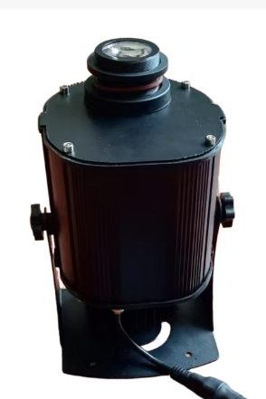
The typical throw distance for a gobo projector can range from 10M to 100M, depending on the model and its specifications.
The RG-PS180A19-RGBW also uses the DMX control protocol, which provides a high level of control and flexibility.
The RG-W38TB30-Ke14 is an example of a 4-in-1 LED wall washer. Yes, some LED wall washers are designed for both indoor and outdoor use.

The RG-W18IB8-Ke8AM, for example, has a beam angle of 30 degrees and is suitable for small to medium-sized events.
For live music applications, consider the RG-TH8B600S, which offers 600W of output and a flash rate of up to 25 times per second.
Fixtures like the 24pcs 1.5W RGB Outdoor LED bar are suitable for pixel mapping. They have a high resolution and can display a wide range of colors.
The RG-EL004FL-3e42 3D Corn Pixel Matrix light, for example, has a size of 500X500X205MM and can create a wide range of effects.
The RG-ML100BD-KC6AH40, for example, is a 610w led moving head beam+RGB laser light that combines the benefits of both technologies.
Check the output, scanning angle, and ILDA control of the laser, such as the RG-LL10000f1LM, which has a 10W output and supports ILDA control.
Class 3B lasers have a lower power output than class 4 lasers, making them safer for use in live events.
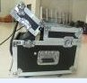
Haze, fog, and spark effects can add a lot of depth and atmosphere to a venue, but choosing the right machine can be overwhelming.
For live music events, consider 600W strobes like the RG-TH8B600S, which offers a high output and adjustable flash rate.
The two catalogue pages that carry the configurations in these tables are RG-PDS28S10IA-V25 and DMX Control Pixel LED Lifting.
Check the output, scanning angle, and ILDA control of the laser, such as the RG-LL10000f1LM, which has a 10W output and ILDA control.
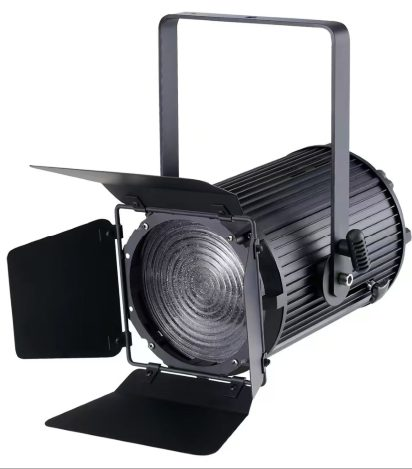
Some popular models of profile spots and fresnel lenses include the RG-PS200A20T50-W, the RG-PS200A15T65M-W, and the RG-PS20A19-W.
The RG-CTD192S8F5-K DMX controller, for example, can be used with sound-activated systems, allowing for more precise control and flexibility.
School and community theatres often have limited budgets, which can make it difficult to create a high-quality lighting system.
Corporate conferences require careful lighting design to ensure that the presenter is well-lit, the screen is visible, and the audience is comfortable.
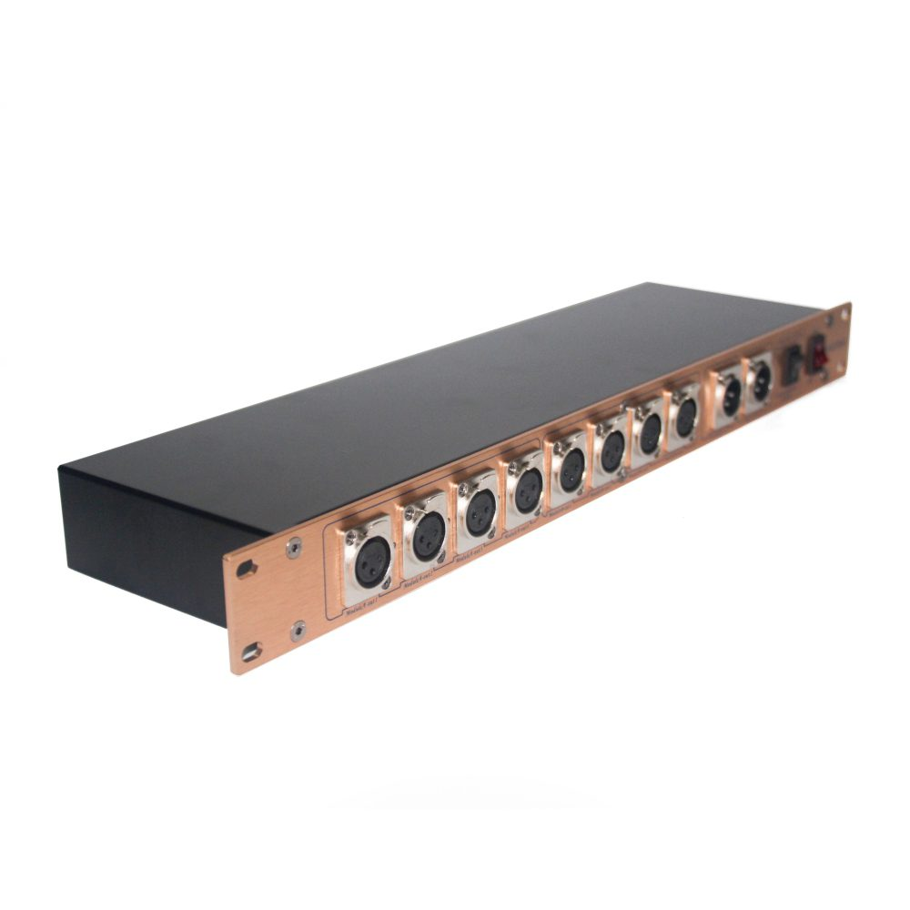
The RG-CA8802 DMX Splitter and the RG-CA8402C Waterproof DMX Splitter are examples of DMX splitters that can be used in a touring rig.
A sanctuary is a room where light has to fall on faces, not in eyes. How to aim, what to buy, and where movement belongs.
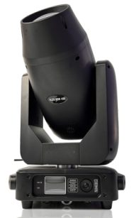
Then ask for the EXW price at your order quantity, because two fixtures with identical wattage can differ in price by more than 2×.
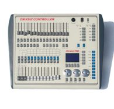
Start addresses, footprints, patch sheets and splitters for working rental techs — real addressing math and a worked 20-fixture one-universe patch.
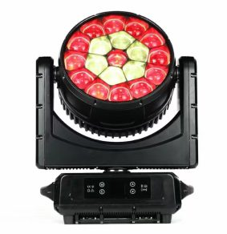
How to tell a factory from a trader, which pricing and MOQ signals matter, what OEM/ODM requires, and the QC gates before your shipment leaves.
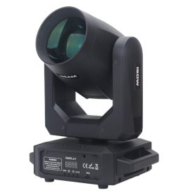
How to size beams and washes to a low ceiling, what to check before you buy, and three budget packages built from real factory pricing.
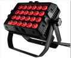
Moving heads, LED PARs and wall washers compared on optics, coverage, control data and real factory pricing, with a worked example rig that uses all three.
DMX512, Art-Net and sACN are not three competing products. Which layer each one owns, and what a touring rig should actually specify.
The order that keeps a rig safe: structure, primary fixing, secondary, power, address, aim. Plus the hardware that does each job.
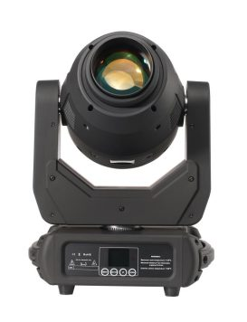
A 3.5 m ceiling changes everything. What to buy for a small club, what to skip, and the four fixtures that cover a 40 m² room.
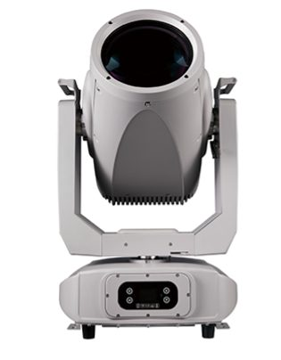
Six things to verify in writing before ordering IP-rated moving heads — from how the IP test was done to whether the yoke bearing can be serviced.
A camera sees a fixture differently than a room does. What pan/tilt speed, repeatability and PWM frequency mean on screen.
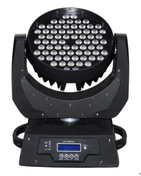
A 17-50 degree zoom covers both ends of a show. How beam angle decides lux, what zoom range to specify, and what the mechanisms cost.
The LED is rarely what fails. What actually ends a moving head's life, which spares to stock, and the questions to put to a supplier.
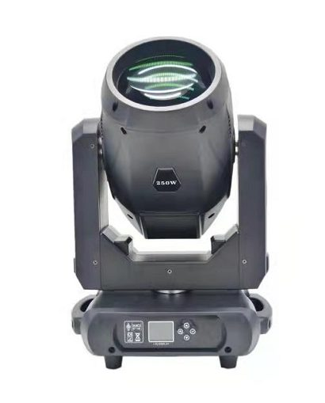
Most tour damage happens in the case, not on the road. How to prep, pack and document a moving head so it arrives working.
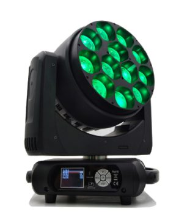
A 16A circuit does not take 14 moving heads. How to size power, cable and chain length for a moving-head rig without tripping on load-in.
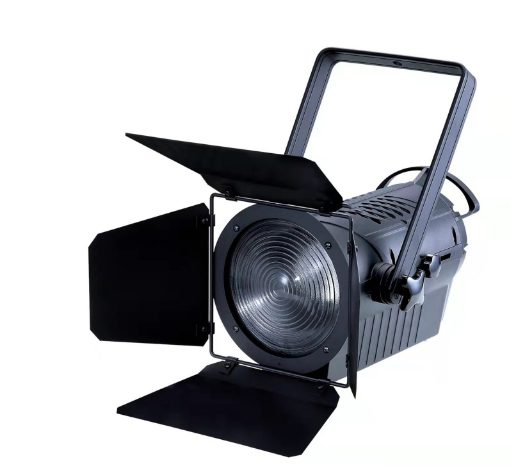
Noise, colour temperature and a clean beam edge matter more than output in a theatre.
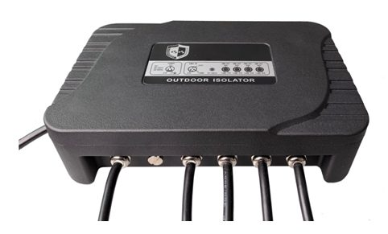
RDM reads fixture status and sets addresses over the DMX line itself. What it can and cannot do, and the hardware that makes it work.
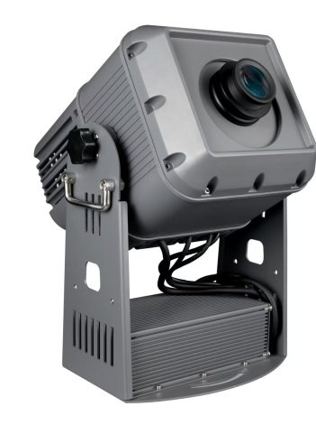
Gobos put a pattern where you point; prisms split one beam into several. Which jobs each one actually solves, and what they cost.
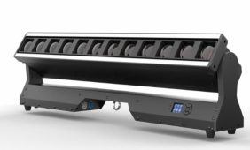
Past ten fixtures, a rental fleet stops being a shopping list and becomes a utilisation problem. How to tier it, spare it and buy it in quantity.
Buy two fixture types in quantity rather than five types in pairs: a small beam and a zoom wash, eight to twelve units in total.
IP65 covers dust-tight and water jets, not immersion; the second digit of the rating is the one that matters outdoors.
Fixed PAR, LED bar, profile, moving head or wash: which fixture family does which job, and how to choose for a venue.
A 200-fixture stage of 24-channel heads is ten universes, not one. How to budget channels, split universes and keep the patch readable.
Beam, wash and hybrid moving heads do three different jobs. Here is what each one buys you, what it costs, and how many of each a working rig needs.
What OEM actually buys you, what it costs in MOQ, and the six terms that decide whether a private-label order goes well.
Festivals and coastal venues fail fixtures two different ways. What to specify for each, with real outdoor models and prices.
Channel math, addressing and controller choice for a small bar rig — with real EXW prices for 192-, 408- and 1024-channel DMX controllers.
Subscribe to receive product updates, guides and event announcements.